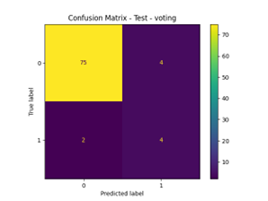

Trained on 52 contaminated viruses and 798 non-contaminated viruses. It uses an ensemble learning approach that combines the strengths of multiple classifiers to boost accuracy and robustness. The ensemble integrates:
From the 10 models trained and tested this model had the best recall average of
contaminated and non-contaminated viruses in samples. With a recall of 81% while
the next best model had a recall average of 4% less and the worst 22% less.
Statistics about the other models can be found in the research paper.
here Read research paper
The model used has a MCC score of 0,54, a F1 score of 0,934 and an accuracy
of 93%. These scores were calculated from the test set confusion matrix in
figure 1:

How it works:
The ensemble aggregates predictions from all included models and selects the
most confident or consensus-based outcome, balancing their strengths for
improved reliability.
trained on ... contaminated viruses and ... non contaminated viruses.
trained on ... contaminated viruses and ... non contaminated viruses.